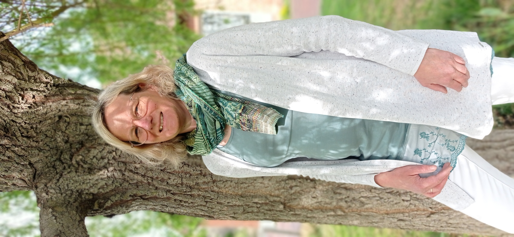

Über mich
Herzlich willkommen auf meiner Seite! Dieser Bereich wird aktuell überarbeitet.
Bald finden Sie hier nähere Informationen zu meiner Person, meinem Werdegang und meiner Motivation für die neuromotorische Entwicklungsförderung nach der INPP®-Methode.